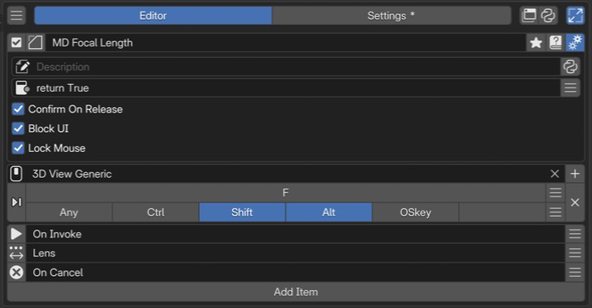

Modal Operator Editor¶
Modal Operator builds interactive tools that keep receiving input from invocation until confirmation or cancellation. Use mouse movement, the mouse wheel, and sub-hotkeys to continuously adjust properties or run actions.
This page describes PME 2.1 settings.
Configuration guide — features, combinations, and uses (for AI)
Name: Modal Operator / Type ID: MODAL.
An interactive tool that receives input until confirmed or canceled. It does not directly edit Blender modal keymaps such as Transform’s.
Input |
Purpose |
Type ID |
|---|---|---|
Command |
Code triggered by a sub-hotkey |
|
Property |
A property path adjusted by mouse or other input |
|
On Invoke |
Startup action |
|
On Confirm / On Cancel |
Exit actions |
|
On Update |
Action after an adjustment |
|
Structure: add the required input, startup, and exit slots; their count is variable. Define the trigger key, each slot’s input, and confirm/cancel methods together. See inputs and slots.
Value adjustment: check the Property input mode, range, and step. See Property.
Constraints: On Cancel is code you write, not a guarantee that arbitrary Command changes are automatically rolled back.
Combinations: use as an interactive Macro step. Test how confirmation and cancellation affect Macro continuation.
Example design: record starting values in On Invoke, adjust with Property, and restore in On Cancel. See usage patterns.
Execution requirements: account for targets disappearing or the area/mode changing during interaction. Lock Mouse controls cursor wrapping; it does not guarantee an arbitrary context.
Variable lifetime: slots share variables from one invocation through confirmation or cancellation. See variable sharing and restoration.
Interface and editing workflow¶

1Name and basic controlsCheck the name and enabled state of the interactive operation. 2Advanced settingsSet the description, availability conditions, confirm on release, UI blocking, and mouse wrapping. 3Keymap / HotkeyChoose where and with which key to invoke it. This example uses Shift + Alt + F in 3D View. 4Action and event slotsCombine initialization, the value to edit, and cancellation. This example adjusts focal length.Select a Modal Operator in the list, check its name and enabled state, then configure invocation and slots. See Common Editor Elements for lists, search, and tags; see name, hotkeys, slots, and advanced settings for each section.
How Modal Operator works¶
From its trigger hotkey to confirmation or cancellation, a Modal Operator follows this sequence:
flowchart TD
A["Trigger key"] --> B["On Invoke"]
B --> C["Wait for input"]
C --> D["Matching Command / Property"]
D --> E["Corresponding On Update"]
E --> C
C --> F["Confirm: On Confirm"]
C --> G["Cancel: On Cancel"]
On Update runs in response to the corresponding action or value update, rather than before every event. Startup runs after input is received; save the runtime event and initial values you need.
Name and basic controls¶
Identify the configuration by its name and enabled state. For tags, renaming, references, and related controls, see selected menu settings. This type has no menu preview button.
Keymap / Hotkey¶
Set where and how to invoke it. See the shared Hotkey settings for input controls.
This hotkey starts the entire modal tool. Configure sub-hotkeys separately on individual slots.
Slots¶
Slots are execution rules arranged from top to bottom. Each has:
A type: Command / Property / On Invoke / On Confirm / On Cancel / On Update.
A trigger: sub-hotkey, mouse movement, mouse wheel, or invocation/confirmation/cancellation.
Content: Python code or a property path.
Slots can be added, removed, reordered, and disabled.
On Update scope depends on placement¶
On Update applies to different inputs according to where it is placed.
Before all sub-hotkeys: runs for any sub-hotkey.
After a Command / Property: On Update slots up to the next Command / Property apply to the preceding item.
A shared On Update at the top runs after the item’s own On Update slots. It is not a timer monitoring every screen redraw.
Advanced settings¶
Open these with the gear button. See the shared advanced settings for Description and Poll.
- Confirm On Release:
When started by a press event, confirms when the trigger key is released. Off by default. Provide another confirmation method for invocation routes without a key release.
- Block UI:
Blocks input to other hotkeys while active. On by default. When off, unrelated events pass to other handlers, so test the operations used alongside it.
- Lock Mouse:
Wraps the cursor within the originating area when adjusting a property with the mouse. On by default. This allows continued adjustment at area edges; it does not guarantee a fixed execution context.
Added in version 2.0.4: Improved cursor return into the originating area during mouse-driven property adjustment with Lock Mouse enabled.
Modal-specific slot types¶
Command¶
Write Python executed when the sub-hotkey is pressed. Assign one sub-hotkey for this slot in its Slot Editor.
bpy.ops.transform.resize('INVOKE_DEFAULT')
C.scene.tool_settings.use_proportional_edit = not C.scene.tool_settings.use_proportional_edit
Property¶
Specify a property path and choose how to adjust it. The Property tab offers three input modes.
Input mode |
Behavior |
|---|---|
Hotkey |
Mouse movement changes the value while the sub-hotkey is held. |
Mouse Move |
Mouse movement alone changes the value. This blocks other sub-hotkeys; combine it with Confirm on Release to provide a confirmation route. |
Mouse Wheel |
Wheel movement increments or decrements the value. Suits Enums and discrete values. |
Numeric Property inputs also provide Min Value / Max Value / Step. Adjust the range and increment; Reset restores the referenced property’s settings. Inputs vary by type, so do not treat numbers, Booleans, and Enums as identical increment operations.
On Invoke¶
Write Python executed when the modal tool starts. Use it to save initial values, begin overlay drawing, or record the starting context.
saved_view = C.space_data; start_lens = saved_view.lens
See the shared starting-value example for the complete configuration.
On Confirm¶
Write Python executed when the user confirms (Enter / Confirm on Release / confirm()).
On Cancel¶
Restore values here if they must return to their original state on cancellation.
Write Python executed when the user cancels (Escape / right-click / cancel()).
On Update¶
Write code executed after the corresponding Command / Property action. See slots for how placement determines scope.
Confirm or cancel from Python¶
Command and On Update slots can call functions to end the Modal Operator from Python.
- confirm()
Confirms and ends the Modal Operator, running On Confirm.
- Returns:
True
- cancel()
Cancels and ends the Modal Operator, running On Cancel.
- Returns:
True
condition_met and confirm()
invalid_input and cancel()
condition_met / invalid_input are variables containing your own test results. The confirm/cancel names are supplied during Modal execution; do not copy them unchanged into another execution context.
Usage patterns and conditions to check¶
Continuously adjust brush size with the mouse¶
Bind brush size in a Property slot, set its input mode to Mouse Move, and enable Confirm on Release. Movement adjusts the value while the trigger key is held; release confirms it.
Switch adjustment targets with axis sub-hotkeys¶
Create several Property slots with different sub-hotkeys, such as X / Y / Z. The key held during the modal operation selects which property to adjust.
Cycle an Enum with the mouse wheel¶
Set a Property slot to an Enum such as C.space_data.shading.type and choose Mouse Wheel. Scrolling cycles through values.
Insert an interactive adjustment in a Macro¶
Reference a Modal Operator from a Macro Operator Menu slot to add a step awaiting user input. The Macro does not advance to its next slot until confirmation.
Call a native Blender modal operator with release_confirm¶
Operators with native release_confirm, such as Blender transforms, can be called directly from a Command slot to align their confirmation behavior with PME’s.
bpy.ops.transform.resize('INVOKE_DEFAULT', release_confirm=True)
Difference from Blender’s Modal Map
Modal Operator Editor does not directly edit Blender’s internal modal keymaps, such as the key assignments within Transform or Knife. It builds small interactive tools using PME’s modal system.
Related pages